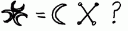

|
|
|
|
|
Fourth Letter from Robert Cochrane to Joe Wilson15 February 1966Dear Joseph, Many thanks for your letter which I read with interest. "I am a Stag Who -- survived the Flood, I am a Flood -- That destroyed the world, I am a Wind -- Of God moving across the desolate world, I am a Tear --The sorrow of Fate, I am a Hawk -- The Child who survived the Flood, I am a Thorn -- The beginning of Fate (Death), I am a Wonder- For I alone transform." The Song of Amergin, combined with two other poems both of which are known, is like the Qabbala - a poetic commentary upon a religious work. The Song begins with a reference to the Golden Age of Man, in which men were Gods. This age of innocence was destroyed when movement began (Fate). The Child is Hope, borne out of the Flood by a stag of seven tines - and like the early Christian doctrine, the horn child travels the world seeking a place to rest. This is a common legend found in all mystery systems. Now to give a more detailed translation. The Stag is Welsh symbolism - it has seven tines on each antler, and represents 1 x 7 x 3 x 7, like 1734. It is the Roebuck, or the inner mystery of Godhead. The Flood is again symbolic and represents Time. The Wind is the Shekinah, the feminine principle of Godhead - that which the Christians name the Holy Ghost. The Tear is akin in principle to the passion of Christ. The Hawk is the young Sun King Baldar - Jesus - Buddah - Llew Llaw Gyffes. The Thorn is Death or the process of Fate and as such the first principle, of the Broom. The wonder is survival of Death - The Wizard is Merridwen, the Sky re-creating Life out of Death - Now you explain something of the next five lines to me. What I have given is a basic translation only - it is far more involved, and to explain fully needs a considerable amount of time and space. However, it has a rough parallel with some of the Old Testament, and with the Babylonian epic of Gilgamesh - The five lines following are an explanation of the Pentagram, so that the pattern makes:
8 = 1 + 7 1
5 = * 2
8 = 1 + 7 3
------------
21 or 3 x 7
Now this becomes also = 3
24 = 2 + 4 = 6
or the combined Cauldron ritual, in which both male and female
meet - this is described as a Star of David.
I understand that you are
corresponding with friend Taliesin - a nice fellow, albeit temperamental.
He says that he belongs to a West Country group, and since he is ever so
hush hush about it, I wouldn't be surprised. A friend of mine who has been
in the People all his life made contact with them some time ago, but got
on badly since they appeared to be very snobbish - not at all like the
People in the Midlands, who will talk to anybody. Anyway, this old boy
from the Midlands was put off by the cloak and dagger approach - he had to
go through practically the whole history before they became interested -
but got so fed up that he broke contact - it was a pity, since he was one
of the last of the Long Compton People, and from my own experience of him
he could have told them a lot. It was he that taught me the mechanics of
the wand and stone - which is the secret behind the standing stones, if it
is understood fully. As you say, one is never through with learning about the Faith. It is a process that begins in childhood and continues throughout life. Some modern groups such as the Gardnerians have contained the active principle of belief and faith into dogma and ritual - this limits the process of wisdom severely, since wisdom cannot be contained but must be free to all that seek it. They appear to have confused the actual mystery, which is beyond words, with procedure - and evolved a secrecy about nothing except nudity and flagellation. The real mystery is only uncovered by the individual, and cannot be told, but only pointed to. Any occultist who claims to have secrets is a fake - the only secret is that which man does not understand - otherwise, all wisdom is an open book to those who would read it. One is discreet about certain things because of blank incomprehension or misunderstanding, but wisdom comes only to those who are ready to receive it - therefore much of the nonsense believed by Gardnerians and some hereditary groups alike concerned with secrecy. There is no secret in the world that cannot be discovered, if the recipient is ready to listen to it - since the very Air itself carries memory and knowledge. Those then that speak of secrets and secrecy and not of discretion or wisdom are those who have not discovered truth. I personally distrust those who would make secrets - since I suspect their knowledge to be small. I was taught by an old woman who remembered the great meetings - and she took no terrible oath from me, but just an understanding that I would be discreet. She did not require silence, only a description of what I had seen and what I had heard and said when I was admitted. The Gods are truly wise - they know the future as well as the past and they admit not those who would abuse knowledge or wisdom. Wisdom is cyclic - when one makes the discovery, one creates the alchemy that brings an answer - and in turn creates more questions from that answer. It is the pussy and hound. When the pussy is pursued by the hound it twists and turns, and turns until eventually it creates a great circle and crosses it's own path. Therefore, Pussy pursues the hound at one point, and not the hound pussy. Symbolically the pussy then becomes the hound, and the hound the pussy- therefore they are but one thing - it is the same with knowledge and the pursuit of wisdom - one thing becomes the other, as also life becomes death, and death life. What is wise now is the desire for wisdom later. The Cauldron is the same, constantly moving, creating, bringing forth, tearing down, building up, movement - therefore the simplest way of expressing what the Cauldron is not is by saying 'Be Still'. Even death is movement, one disintegrates and is recreated. The past moves in the future, since past shapes the future to come - this is Fate. All things that are of this world belong to the past, the flesh is heir to the sins and wisdom of the past - therefore the past lives on. There is no such time as 'Now' since that would require stillness to create it, and now is an impossible fragment of time - even to think of now is to think of the past. Therefore, and very simply to put your feet on the road - the words are 'Be Still'. Mayhap the true pursuit of man is in capturing stillness - since when the moment of silence is created magically man becomes as God. The true cross is created out of four circles leaning slightly to the Northeast. It should be seen clearly - therefore it does not matter how it is fashioned. It should have the same quality as the dark mirror - that is it should reflect light softly so that the conscious world is lulled, and the world of dreams may come to the surface. It needs time and practice to use it but if a genuine desire to see is there, you will see. You will find that it assists in meditation if the gaze is fixed on it while a small light burns nearby. I understand that in the past the Maid would wear a cloak sewn with little silver discs that the People would gaze upon - and she acted as a medium for the People whilst they reflected upon her cloak. Flax is a common cultivated flower known an Linum. The variety known as Narbonense is very good - it is also a decorative in a garden. It is gathered and hung to semi-dry in darkness. When it is nearly dry beat it with a mallet made of wood until the fibres are separated from the stem. This produces a linen 'shoddy'. These are combed out with a teazle head until they are reasonably separate, then spun upon a distaff by a woman who 'sings' to the moon (sounds crazy?) This linen shoddy should be dyed before combing or spinning by Alder bark for red, blackberries (or equivalent) for blue, and bleached in lime or chalk for the white. Your whole length should be measured in this, then seven knots tied in the plait - and then you have the beginnings of a cord which is worn about the waist or neck and used as a meditational device, a la 1734. The remains should be kept in the separate colours and spun upon the distaff. This, used with Mother Broom, and symbolic herbs will assist the cure of most illnesses if a piece is tied and charmed around the afflicted part and three knots tied. I know it sounds crazy but-- from personal experience I know it works. I have seen the common cold cured, cancer of the womb, warts, and bleeding stopped by this yarn - but it is dependent upon the moon's phases, and Mother Broom for the inner workings. The slow process of creating the yarn is a form of alchemy. If your wife uses it, she must not use the Alder, but instead turn to blackthorn for a black thread, but be careful of that yarn for it carries the power to blast. What is known as 'witchcraft' is full of apparent superstitions that upon reflection have a sound scientific basis. Alchemical formula produces a resistance free copper - although analysis shows this copper to be of the normal purity rate, approx: 98%, yet normal copper has a resistance of 7% to electricity. The slow process of creation works its own magic - just in the same way that the innumerable firings of the copper produced a 'normal' article that has an unusual power. This applies to all materials used in working, since they are accumulated and collected carefully, and have power of their own. It is intent and the love of God in creating the magical substance that transmutes it not any particular power in its own right. The best example of this is woman. All females, irrespective of species is a lesser moon reflecting the Greater. She is made of three elements, the poor male possessing the fourth. Through these elements, she creates a chain unbroken that ranges from primitive childbearing and nest making to the Goddess woman flying in strange climates. Man is individualized and solitary - lead only by reason or passion. Woman by her physical structure is part of the cycle of evolution, and therefore part of the group soul. You notice in homemaking how they create a nest of security, a bond that is shared with all other females, and how the female passion embraces all creatures that have need - a bitch in whelp will mother kittens, etc. The woman, as a possessor of this common instinct, shares experience with the group soul - and what she and thousands of others do shapes that soul for time to come. Therefore, if one observes the way a woman instinctively works reflecting the tides of her body, and of the group soul - one learns about the creation of charms and remedies by 'magic' since the slow tide of growth and protection shapes the group entity, so can another principle, if undertaken as naturally shape it also. A plant grown with intent, a branch cut with intent and prepared according to the natural rhythms of life can affect any natural creature - the only creature it may not affect is man, and that man will be the product of a corrupt society in which nature has become a whore. The yarn spell has everything in common with the instinct that makes a mother knit for a forthcoming baby - each stitch is a spell for protection and comfort, wrought by love. Woman is a magical creature, not be cause of the tides of her body as Graves suggests, but because she has this power to shape the group entity to her desire and following the tides of her soul she creates magic of no small order in making a home for her offspring. It is the Earth Mother working in her deep instinctive acts and she both creates and influences the group soul. It follows then, in charming, one should follow the tidal movements of the soul, and of the group soul, rather than the intellect and haste of the fire male. A rhythm worked upon like this strikes a resonance in the group - and power contacts are made. Alchemy and transmutation takes place not because of the material or what is done, but because of the resonance upon the group - and the power of the group. A tide is created, and another tide stilled - a balance wrought. My regards and blessings to you and yours, F,F,F /S/Roy Bowers alias Robert Cochrane P.S. This month's problem -  |
|
[ Owns | Questions | Riddles | Sean | Ruth | Roy | Feedback | Links ] |
| Copyright 2002 by Joseph B Wilson. All rights reserved |